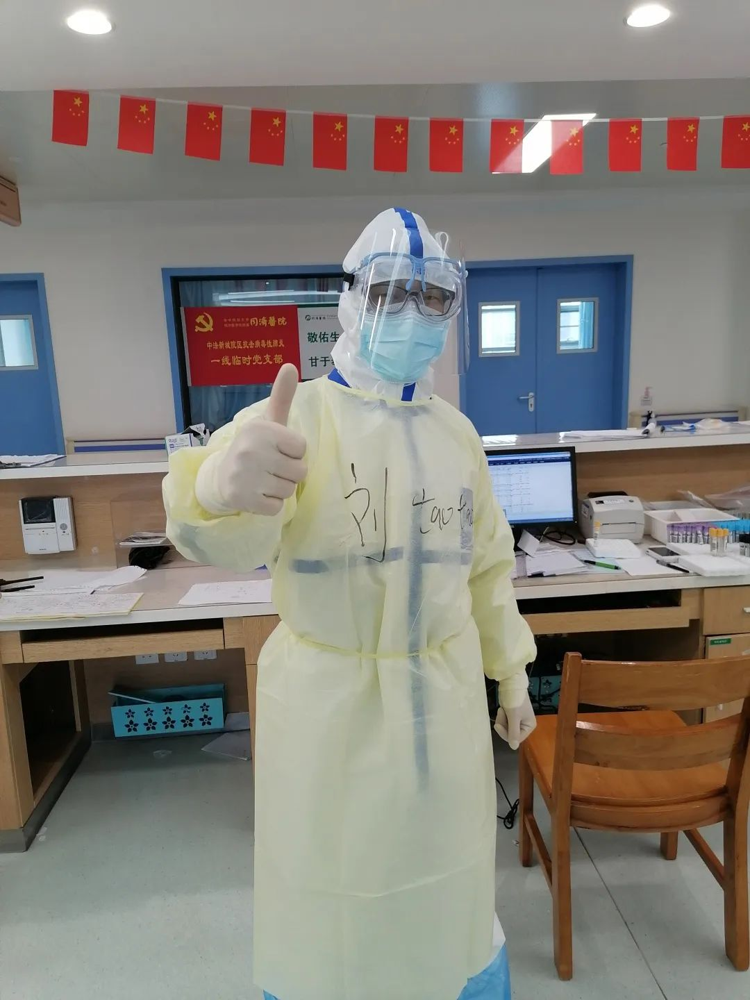
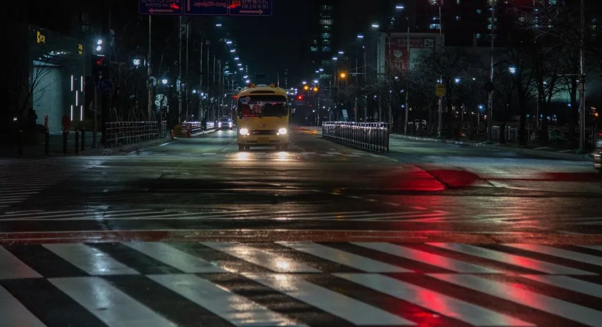
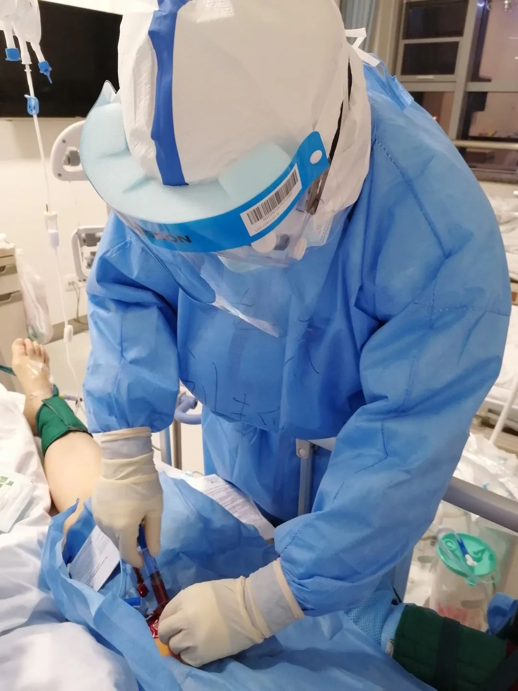
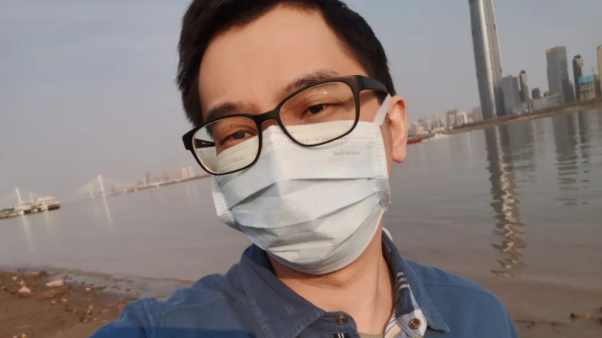

95后一线护士：盛放在武汉病房的葵花
原文链接 备份链接 她会因为想家哭鼻子，也会因为喝到可乐而幸福感爆棚。她自愿报名到武汉一线为患者服务，我又钦佩她的坚强和勇敢。 文 | 吴美芬 小葵是从北京到武汉支援的一名护士，今年24岁。2月7日她到达武汉，至今已经有20天。2月19 …
编者按：
本文作者刘韬滔为北京医院外科ICU主治医师，进入援鄂国家医疗队名单后，二月七日从北京去往武汉，进行医疗救助。
二月八日晚上九点坐大巴车从汉口驻地出发。半小时后进入蔡甸区，车在一路口红灯前停下。我转头望向窗外，赫然看见指示路牌：火神山医院。
继续前行，靠近院区后有路障，两名交警站立路口，气氛略显紧张。楼顶“华中科技大学同济医院中法新城院区”的大字招牌在暗夜里泛出红光。车辆缓缓进入医院，我们由员工通道鱼贯而入。
初进隔离病房
出电梯，刷卡，进入清洁区办公室。
护士们在路上也都戴着护目镜，她们说护目镜让自己安心。为了保证贴合严丝合缝，有的人喜欢把护目镜和口罩勒紧。后来进入隔离病房才发现，这种持续的轻微压迫，不超过半小时，就会像紧箍咒一样，导致严重头痛。气溶胶传播跟暴露时间和病毒浓度相关，所以我只在污染区才戴护目镜和N95口罩。护士都说我心大。

我在污染区戴着护目镜和N95口罩 | 作者供图
从北京出发前，我只是在培训现场观摩了一下防护流程，没想到抵汉之后就直接进入病房工作，有点在战争中学习战争的意思。
病房楼新改造完毕，留下两名医生在清洁办公区开立医嘱，书写电子病历。有一名感染控制人员专门协助监督大家穿脱防护服。三名医生，四名护士，穿戴整齐所有防护，还要再穿过四道门，跨越三个缓冲区，才能进入污染区的隔离病房。每一个缓冲区相对的两道门不能同时打开，防止空气对流。
刚刚进入病区，立刻就有新病人到来，原本空荡荡的病区就成了真正的污染区。同济医院留下了几个护士协助我们。相比这些已经克服了恐惧的本院护士，新来的众人看见病人后都禁不住有点退缩。
每个房间都开了通风扇，很吵。防护服的连体帽包住双耳，需要近距离说话才能听清楚。余光又被护目镜遮挡，只能看见前方视野。问诊的时候，我提醒病人戴好口罩，站在病人一侧。病人习惯看着我说话，不停地咳嗽。我屏了一口气，觉得自己的面屏上喷满了飞沫。

刚刚进入病区，立刻就有新病人到来 | 图虫创意
患者血氧饱和度83%，鼻导管吸氧之后升至97%。因为没有查血气分析，我在心里估算，氧和指数不超过250mmHg（正常值为400～500mmHg），属于重症。目前病区里只配有家用型无创呼吸机和一台高流量吸氧仪，如果病情恶化，是不能给予有效支持的。穿着防护服，行动不便，估计真正抢救时一定困难重重。
所有穿进污染区的衣物，出去后都必须换下，不能带离医院。为了穿脱方便，我们都只贴身穿了一件单层短袖的刷手衣。湖北古时称作云梦泽，湿度极大，夜间体感寒冷。加上来汉路程劳累，极其疲惫，我进入病区俩小时之后就盼着早点出去。大家都不再说话，在椅子上坐下静静等待。
交班
凌晨四点，接班医师终于来了。
在手术室穿手术衣要遵循无菌原则，为了保护患者不能接触外层，手术结束之后外科医师就可以潇洒随意地脱掉了。脱隔离服的要求则恰好相反，出病房时外层已经污染，因此需要小心双手别碰到内层，保护自己。
我摘掉面屏和外科口罩，脱掉外层隔离服和外层手套，动作轻柔，尽量避免产生气溶胶。然后进入第二个缓冲区，摘掉护目镜，脱掉防护服和内层手套。在第三个缓冲区换掉N95口罩和帽子。每完成一个动作之后都要仔细用酒精消毒双手，开启每一道门之前也要消毒双手和门把手。最后，在清洁区更换贴身衣物。大巴车在医院门口已经等候快一小时了，凌晨五点半，终于回到酒店。

凌晨五点半，大巴车带着我们回到酒店 | Pixabay
很多同行都建议把酒店的房间也做一个清洁区和污染区的划分。在一个没有隔断的十几平米空间里做这种事，我觉得是自欺欺人，但为了心理上舒服一点，还是脱掉身上所有衣物，塞进门后柜子里，哆嗦着径直走进卫生间仔细洗澡。又困又饿，我后悔没有自备干粮，担心低血糖，在热水杯里投了两片橙味维生素喝掉了。早上六点半，终于倒头睡下。这一天，是我三十七岁生日。
查房
二月十日我再次进入病房。等待入院患者极多，病区开放不到四十八小时，已经满床了。
大家的恐惧感开始消退，穿脱衣服也更加熟练。同组医生查房发现有一个病人呼吸窘迫。有创呼吸机还没有到位，来不及插管，几分钟后病人就已经心跳停止。
来汉之前，我自忖从事重症专科多年。现在才意识到新冠病毒的厉害。虽然之前也见过流感病毒导致的呼吸衰竭和心肌炎，但是甲流的传染性和重症发生率显然都不及它。
也许方舱医院的医生觉得大部分病人都是轻症，但是我们在重症病房见到的，多是呼吸衰竭病人，在治疗危重症的监护病房，病人就是九死一生。各处的医生面向不同的患者，直观印象也会有很大不同。
外地和湖北的病死率差异极大。首先有很多轻症患者早期没有进入到武汉当地的统计样本内，大家不知道有多少疑似病例没有接受核酸检测，也不清楚核酸检测的假阴性率到底多少。还有一个重要原因，武汉在短期之内很难接收这么多重症患者，医疗资源受到严重挤兑。尽管现在可以给患者提供ECMO（体外膜肺氧合）等高级生命支持，但早期的充分救治更加重要。
比如这个猝死的患者，本身有肝硬化，新冠病毒只是其致死的诱因。实际上，我们现在能做的只是处理合并症，给予支持治疗。对于病毒本身，还缺少有效的药物治疗。后来和当地医生交流，他们之前估计早期实际发病人数大约是当时已知数据的十倍。

不知道有多少疑似病例没有接受核酸检测 | 图虫创意
我继续查房，大部分患者都有家庭聚集发病的病史，个别患者的家庭成员中已经接连死去两三人。问诊的时候，这几个病人诉说病史，神情淡漠。按照心理学的解释，遭遇创伤事件，在最初的痛哭之后就是麻木与抗拒，之后才可能慢慢克服心理创伤开始新的生活。
抢救
二月十四日晚，风雨大作，病房窗户振振作响，如有鬼魅。有一个病人几天前刚收治时症状轻微，还能和家人通话。前一夜氧饱和度突然下降，高流量吸氧和无创呼吸机都不能改善，于是气管插管机械通气，成了病房最重的患者。有一部分新冠肺炎患者会在起病后某个时间里迅速恶化，和其他肺炎相比，呼吸衰竭进展更快。但是在此之前，医生很难区别哪些新冠肺炎病人会恶化。
后半夜我进去看病人，吸纯氧，饱和度92%，收缩压下降到60mmHg（正常值为100～120mmHg）。这是在呼吸衰竭的基础之上出现循环休克。全身感染引起的循环休克可以在数十分钟内致命，需要液体复苏和血管活性药物治疗，前提是开放深静脉通路才能泵入药物。

部分新冠肺炎患者会在起病后迅速恶化，进展到呼吸衰竭 | 图虫创意
我们医院运送的超声机还在京广线上。没有超声，就只能靠解剖定位，来明确病人股静脉的位置。这活儿我已经干了十年，我觉得自己手很巧，不管是静脉置管，还是气管切开，在紧急抢救的时候都尝试过，几分钟之内可以完成。现在唯一的问题是病人较胖，我在双层防护手套外面又戴了一层外科无菌手套，难以触摸到动脉的搏动。终于找到动脉后，我嘱咐自己慢一点，再慢一点，千万不要因为着急出现锐器划伤。
前天夜里就有个护士输液的时候被针头刺破自己手指。好些年之前我给丙肝患者做手术，也扎破过手指，这种短暂微小的职业暴露一般不会有什么风险，但还是会让人惴惴不安。
花了半个小时才顺利做完操作，小心收好缝针。使用去甲肾上腺素之后，他的收缩压稳定于100mmHg以上，调整呼吸机的参数，氧饱和度也开始升高。我觉得病人至少在当天夜里性命保住了。

正在进行股静脉穿刺丨作者供图
出污染区之后，看见有个同济医院护士在吃盒饭。我们医疗队内部规定，为了减少污染暴露，一律不在医院用餐。武汉的疫情让我已经做好持久战的准备，我热了一盒米饭，还有一份莲藕排骨。吃完之后，跟那个面孔微黑的小护士炫耀了一番楚人“不服周”的典故，然后请教她武汉话该怎么讲。她笑着说：我信你个邪哟。
驻地生活
二月十七日，雪后初霁，碧空万里。
下午我去护士长房间领取分发的物资。来汉一周后各处捐助物资增多，饮食改善，每日吃一碗热干面。有些水果我们就放在走廊让酒店服务员自取，服务员在字条上留言感谢。
护士长房间整洁温馨，靠南面窗户的可以晾晒衣服。窗外长江水面极阔，于是赞叹，一起回顾了共同的朋友，还有年轻时的好时光。我喝了一杯咖啡，又喝了一杯本地清茶恩施玉露，下楼在门前闲逛。

抽空下楼在门前闲逛 | 作者供图
在汉口的黎黄陂路口，有身着隔离衣的工作人员，偶有交警。沿江滩北行，看见有老妇人年逾八十，牵一黑狗，独坐在防汛纪念碑下。碑上刻有毛主席诗词《水调歌头·游泳》，语录“一不怕苦，二不怕死”，“下定决心，不怕牺牲，排除万难，去争取胜利”。汉口开埠百年，一直是传统商业中心，此地的老住户向来见惯了大世面，神情波澜不惊。
近日武汉大量床位开放，我们病区已出现空床。估计疫情已经逐渐控制，只需要严格隔离，慢慢等待。我来回骑行数里，微微出汗，心情好极了。
晚间回到酒店，浴缸消毒泡澡。窗外高楼打出字幕：武汉必胜。看两岸灯火，恍然不知身在何处。
后记
我所在病区近一周以来陆续有患者出院，武汉当地疫情控制逐渐趋于稳定。
回顾一个月之前，大年初一突然接到医院通知，准备前往武汉抗击疫情，时刻待命。当时我正在陪父母逛中山公园和天安门广场，游客稀少，异常冷清。
路上我把参加医疗队的事情给父母讲了，母亲很担心。父亲初中毕业做过中医学徒，后来又读了医学院校，在我印象中他的性格内向懦弱。让我意外的是父亲居然全力支持“应该去” 。
作为一个工作十余年的重症医生，在严重疫情之下，如果不能参与到一线，也算是我执业生涯的遗憾吧。意在斯乎！意在斯乎！小子何敢让焉！
作者：刘韬滔
编辑：木易杨杨
如果你也在一线和疫情战斗，欢迎向AI讲出你的故事


本文来自果壳，未经授权不得转载.
如有需要请联系sns@guokr.com

原文链接 备份链接 她会因为想家哭鼻子，也会因为喝到可乐而幸福感爆棚。她自愿报名到武汉一线为患者服务，我又钦佩她的坚强和勇敢。 文 | 吴美芬 小葵是从北京到武汉支援的一名护士，今年24岁。2月7日她到达武汉，至今已经有20天。2月19 …
原文链接 备份链接 *************▲*************湖北省医疗救治组专家在同济医院中法新城院区新冠肺炎重症病区与患者交谈。 （新华社/图） 全文共6264字，阅读大约需要14分钟。 就在徐慧连觉得患者能化险为夷时， …
原文链接 备份链接 凤凰新闻客户端 凤凰网在人间工作室出品 我是北京日报摄影记者和冠欣，1月27日，我跟随援鄂北京医疗队来到了武汉，走上了抗击新冠肺炎的战场。昨天，2月25日，是我到武汉的第30天。 援鄂北京医疗队来到武汉后，在武汉协和 …
原文链接 备份链接 口述 马洪全 采写 谢如颖 图片 陈玮曦 马洪全今年 27 岁，在武汉生活了 3 年多，本职工作是一名金融销售。2 月 9 日，武汉某医院招募志愿者，负责病房消毒和清理医疗垃圾。这大概是此次疫情中非医护人员所能从事的最 …
原文链接 备份链接 【财新网】（记者 赵宁 实习记者 曾美雅）北京大学人民医院一名住院病人感染新冠肺炎的消息传出后，北京疫情防控备受关注。国家主席习近平在2月23日的讲话中，更是将“全力做好北京疫情防控工作”作为了七项重点工作之一。由于医 …